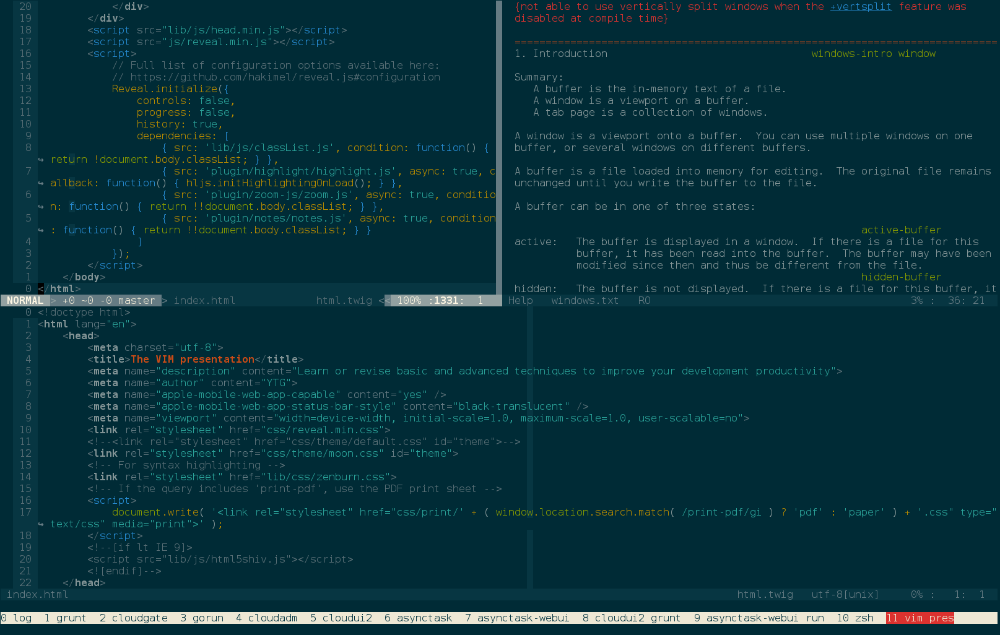
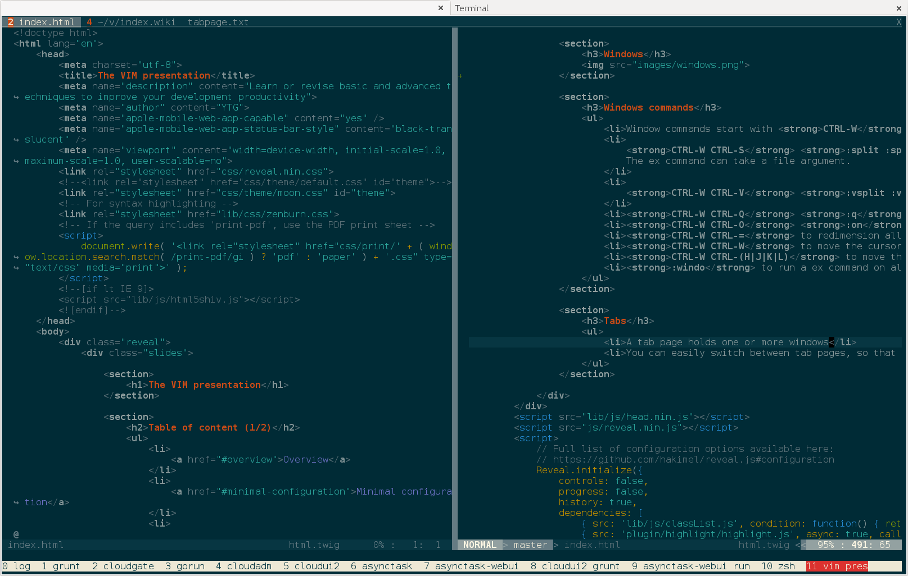
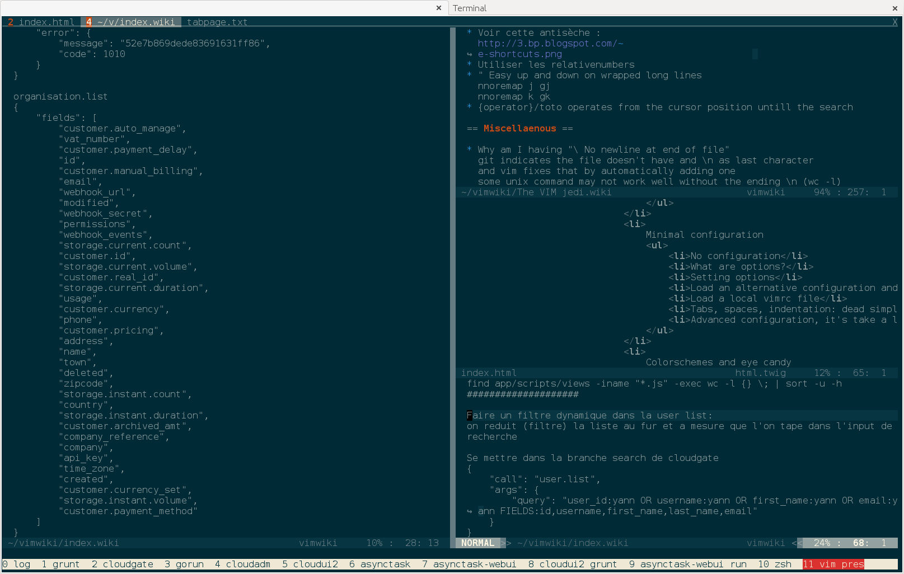
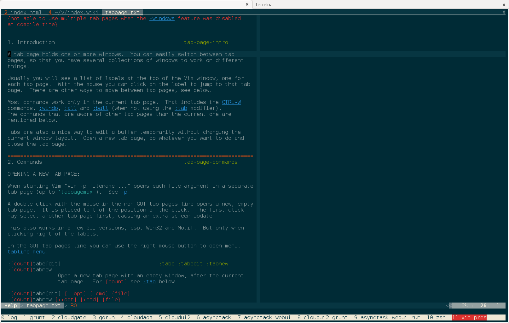
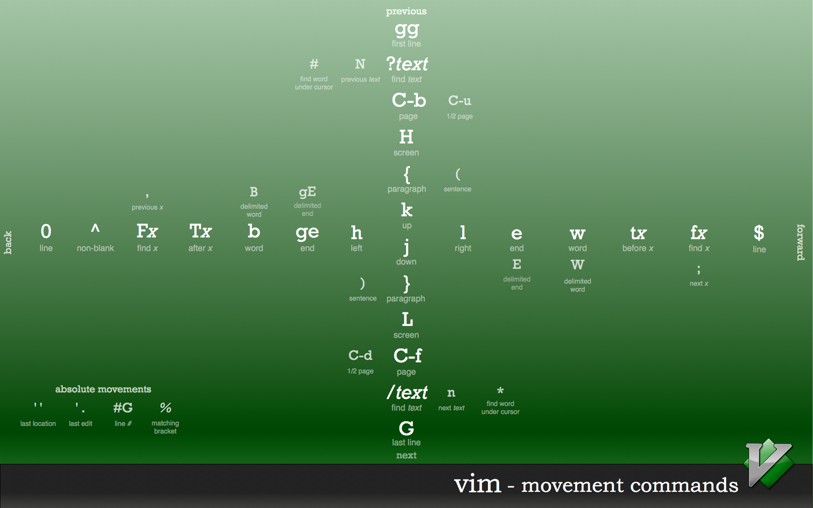
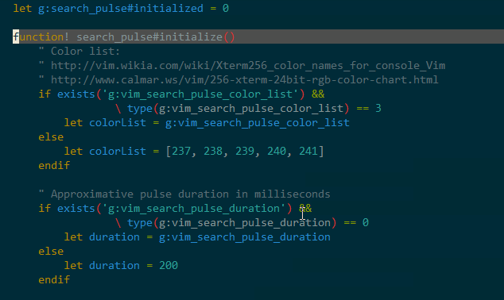
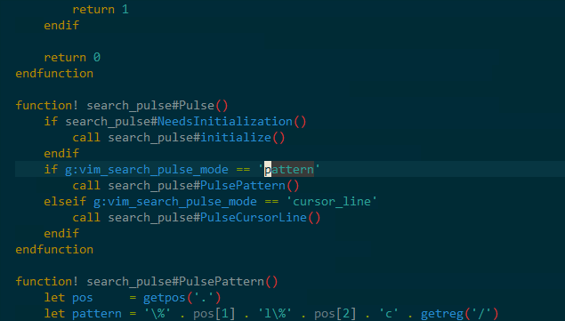
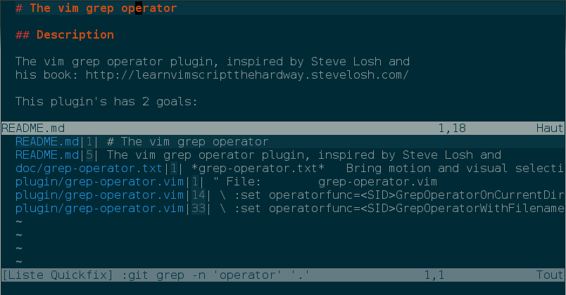
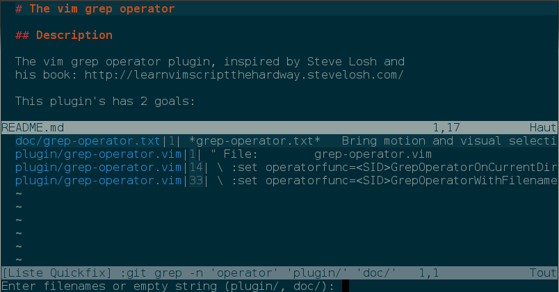

The VIM presentation
:h intro
:help
:helpgrep
Part 1
Part 2
Part 1
Overview
Qwerty, the coder's keyboard layout
- One keystroke to frequently used characters . / [] ; ' \
- Two keystrokes characters with easy access () {} < > :
- One keystroke to type numbers
- , . / ? are frequently used keys in vim
Azerty is good for writing french
Touch typing
- Use klavaro to learn touch typing
- The goal is to stay as close as possible to home row (asdf jkl;)
-
Vim uses hjkl for cursor movement

A brief history of vim
- Written by Bram Moolenaar
- 1991, v1.14 - First public release for the Amiga
- 1994, v3.0 - Support for multiple windows
- 1996, v4.0 - Graphical user interface
- 1998, v5.2 - Long line support, file browser, dialogs, popup menu, select mode, session files, user defined functions and commands, Tcl interface
- 2001, v6.0 - Folding, plugins, multi-language
- 2006, v7.0 - Spell checking, code completion, tabs, current line and column highlighting, undo branches, and more
- 2013, v7.4 - A new, faster regular expression engine
Why vim?
The best text editor is the one you know best. But...
- Vim is preinstalled on almost every OS
- Vim can be run from a terminal or with the graphical interface (gvim)
- Access to your ~/.vimrc file from github and you're ready to code
- If vim is not installed you can compile it from the sources
Vim compilation
~% mkdir src && cd src
~% hg clone https://vim.googlecode.com/hg/ vim
~% cd vim
~% hg pull && hg update
Uncommented options in ~/src/vim/src/Makefile
CONF_OPT_GUI = --disable-gui
CONF_OPT_LUA = --enable-luainterp
CONF_OPT_PYTHON = --enable-pythoninterp
CONF_OPT_RUBY = --enable-rubyinterp
CONF_OPT_FEAT = --with-features=big
CONF_OPT_COMPBY = "--with-compiledby=ytg"
CONF_OPT_X = --without-x
# Home installation?
prefix = $(HOME)
Then type:
~% make
~% sudo make install
If you change anything in the src/Makefile be sure to type:
~% make reconfig
Minimal configuration
No configuration
% vim -u NONE -N
-u {vimrc} Use the commands in the file {vimrc}... ...It can also be used to skip all initializations by giving the name "NONE".
-N No-compatible mode.
What are options?
- :h options
- boolean can only be on or off
- number has a numeric value
- string has a string value
Setting options
- :set {option}? show option value
- :set {option}& Reset option to its default value
-
Boolean option
- :set {option} switch it on
- :set no{option} switch it off
- :set {option}! or :set inv{option} toggle option
-
String or Number option
- :set {option}={value} set string or number option to {value}
- :set {option}+={value} add the {value} to a number option, or append the {value} to a string option
- :set {option}-={value} same as above but substract or remove
Load an alternative configuration and plugins directory
vim -u ~/.another.vimrc
set runtimepath+=~/.another.vim
Load a local vimrc file
Use a .vimrc.local file for specific configuration you need and/or don't want to disclose on github
if filereadable($HOME . '/.vimrc.local')
source $HOME/.vimrc.local
endif
Tabs, spaces, indentation: dead simple ;-)
A ~/.vimrc sample:
set nocompatible
" Should always have the same value for simplicity's sake "
set shiftwidth=4 tabstop=4 softtabstop=4
set expandtab
filetype plugin on
syntax on
" When sourcing multiple times your vimrc file "
" clear the autocommands first instead of adding them "
augroup mygroup
autocmd!
autocmd FileType make setlocal noexpandtab
augroup END
Advanced configuration, it's take a life time
- Keep track of your ~/.vimrc file on github
- Use the option's full name in favor of the shorthand version
- Edit and source in a flash
nnoremap <leader>E :edit $MYVIMRC<cr>
nnoremap <leader>S :source $MYVIMRC<cr>
Colorschemes and eye candy
Terminal configuration
# ~/.zshrc or ~/.bashrc
export TERM=xterm-256color
# ~/.screenrc
term screen-256color
Colorschemes repository and viewer
-
A colorscheme repository:
https://github.com/flazz/vim-colorschemes -
A colorscheme viewer:
http://bytefluent.com/vivify/
Eye candy settings
# ~/.zshrc or ~/.bashrc
# Disable cursor blinking
# http://vim.wikia.com/wiki/Configuring_the_cursor
echo -ne "\033]12;#ffffff\007"
" ~/.vimrc "
set cursorline " Highlight the cursor screen line "
set colorcolumn=80 " Draws a vertical line at column 80 "
" String to put at the start of lines that have been wrapped "
let &showbreak='↪ '
" Minimal number of screen lines to keep above and below the cursor "
set scrolloff=3
" If 't_vb' is cleared and 'visualbell' is set, "
" no beep and no flash will ever occur "
set visualbell
set t_vb=
set guicursor+=a:blinkon0 " Disable gui cursor blinking "
Buffers, windows and tabs
:help windows-intro
Buffers
- A buffer is a file loaded into memory for editing
- All opened files are associated with a buffer
- There are also buffers not associated with any file
Buffers commands
- :ls shows all buffers
- % is the current file
- # is the alternate file. Use the CTRL-^ to toggle between the current and alternate file
- :buffer :b given a full or partial name (use tab to complete) or number, edit buffer
- :bdelete :bd like the above but deletes one or more buffers
- :bnext :bn go to next buffer
- :bprevious :bp go to previous buffer
- :bufdo to run a ex command on all buffers (:bufdo %s/foo/bar/g). Set the 'hidden' option so buffers do not need to be saved
- :wall :wa Write all buffers
- :saveas Write to file and edit it
Buffer mappings
Mapping suggestion, courtesy of the https://github.com/tpope/vim-unimpaired plugin.
nnoremap [b :bprevious<cr>
nnoremap ]b :bnext<cr>
Prefer not to map the Tab key as CTRL-I and tab is the same in vim. CTRL-I goes forward in the jump list.
Windows
- A window is a viewport onto a buffer
- You can use multiple windows on one buffer, or several windows on different buffers
- Use the mouse to scroll, give focus and resize a window (:set mouse=a)
Windows
Windows commands
- Window commands start with CTRL-W
- CTRL-W CTRL-S :split :sp Horizontally split current window in two. The ex command can take a file argument.
- CTRL-W CTRL-V :vsplit :vs Vertically split current window in two
- CTRL-W CTRL-Q :q to close a window
- CTRL-W CTRL-O :on to close all other window but the current window
- CTRL-W CTRL-= to redimension all windows
- CTRL-W CTRL-W to move the cursor clockwise from window to window
- CTRL-W CTRL-(H|J|K|L) to move the cursor to the left, top, bottom or right window
- :windo to run a ex command on all windows
Tabs
- :h tabpage
- A tab page holds one or more windows
- You can easily switch between tab pages, so that you have several collections of windows to work on different things
Tabs
Tabs
Tabs
Tabs
- :tabnew or :tabnew {file}
- :tabclose
- :tabonly
- :tabNext ({count}gt in normal mode)
- :tabprevious ({count}gT in normal mode)
- :tabdo {cmd} execute {cmd} in each tab page
Modes
Introduces normal mode motions
:h vim-modes
Normal mode
- Default mode when the editor starts
- Movements are made from normal mode
- Pin point the location of your next change or insertion
- Use :set relativenumber
-
Easy up and down on wrapped long lines
nnoremap j gj
nnoremap k gk - zz redraws at center of window
- z<cr> redraws at top of window
- {operator}/foo operates from the cursor position until the search
Vim movements cheat sheet
Insert mode
- :h usr_24.txt
- Enter insert mode using: i, I, a, A, o, O, gi (Go to last insertion and switch to insert mode)
- CTRL-W to delete the word before the cursor
- CTRL-U to delete the line before the cursor
-
Use completion CTRL-N, CTRL-P to complete a word
- CTRL-N, CTRL-P again to cycle forward, backward
- CTRL-Y to choose the value
- CTRL-E to discard the completion menu
Leave insert mode
- Esc
- CTRL-[
- CTRL-C
Or, remap jk to escape:
inoremap jk <esc>
inoremap <esc> <nop>
Paste in insert mode, terminal only
:set paste
Then paste using the system's paste command
:set nopaste
This is an unoptimized workflow.
Paste in insert mode
" Inspired by https://github.com/tpope/vim-unimpaired "
" Sets paste on and set nopaste when leaving insert mode "
" using an autocommand "
nnoremap <silent> yo :set paste<cr>o
nnoremap <silent> yO :set paste<cr>O
" Disables paste mode when leaving insert mode
autocmd InsertLeave *
\ if &paste == 1 |
\ set nopaste |
\ endif
Command mode
- In this mode, you type ex commands
- Enter command mode by typing ':'
- Do it faster by remapping ; to : and : to ;
- Use the command history window q:
- Use the search history window q/
- CTRL-R CTRL-W brings the word under the cursor in the command line
- CTRL-R CTRL-0 brings the yanked content in the command line
Vim modes in your shell
For zsh users
# ~/.zshrc
bindkey -v
# maps jk to escape, same as in my .vimrc
bindkey -M viins 'jk' vi-cmd-mode
For bash users
# ~/.bashrc
set -o vi
# ~/.inputrc
$if mode=vi
set keymap vi-insert
"jk": vi-movement-mode
$endif
For all users
Use ctrl-z and fg to switch between the command line and vim
Visual modes
Visual modes
- v, character visual mode
- V, line wise visual mode
- CTRL-V, visual bloc mode (I insert at start, A insert at end)
- Use the mouse to select character wise
- Each key combination is a toggle from visual to normal mode and vice versa
- Extend the visual selection with o and j / k
- Recall the last visual selection with gv
Text objects
:h text-objects
Text objects
- Used while in visual mode or after an operator (d, y, c...)
- The movement command operates from here (cursor position) to where the movement takes us.
- When using an object the whole object is operated upon, no matter where on the object the cursor is.
- "i" selects an "inner" object
- "a" selects "a"n object including whitespace
- "a" always selects more text than "i"
Text objects
- iw, iW inner word, WORD
- aw, aW a word, WORD with a leading or trailing space
- ip inner paragraph, ap a paragraph including trailing space
- i] or i[ inner brackets
- a] or a[ inner brackets and brackets included
- i) or i(
- a) or a(
- i} or i{
- a} or a{
- i> or i<
- a> or a<
- it inner tag, at a tag
- i', i" quoted text
- a', a" quoted text quotes included
Text objects examples
- diw, delete inner word
- daw, delete a word
- diW, delete inner WORD
- daW, delete a WORD
- yip, yank inner paragraph
- yap, yank a paragraph
- cit, change inner tag
- cat, change a tag
- ci(, ca(, vi', vi", ci', ci"
Operators
:h operator
Operators
- After a visual selection
- Before a motion
- Before a text object
-
They can be prefixed by a count:
3yw 3cw 2dap
or the equivalent more like a phrase:y3w c3w d2ap
-
When an operator is repeated, it operates on the line
dd 3yy 5>>
Operators list
| c | change |
| d | delete |
| y | yank into register (does not change the text) |
| ~ | swap case (only if 'tildeop' is set) |
| g~ | swap case |
| gu | make lowercase |
| gU | make uppercase |
| ! | filter through an external program |
| = | filter through 'equalprg' or C-indenting if empty |
| gq | text formatting |
| g? | ROT13 encoding |
| > | shift right |
| < | shift left |
Idioms
count + operator + motion or text object == idioms == actions
Idioms is more or less a synonym for grammar
Marks
Marks are similar to bookmarks
- m{a-z} set buffer local marks
- m{A-Z} set global marks
- '{a-zA-Z} go to {a-zA-Z} mark at first non blank character
- `{a-zA-Z} go to {a-zA-Z} mark, preserve cursor column number
- Marks can be used as motions, v'a (visually select from here to mark "a")
- '. is the last change mark
- '', `` to the position before the latest jump
- :marks lists all marks
Jumps
Jumps are like breadcrumb navigation
- Next/prev search, paragraph, matchpair, edit file...
- Tiny movements are not jumps, hjkl, 10j, w, b
- Each window has its own jumps list
- CTRL-O go to older jump
- CTRL-I go to newer jump
- :jumps lists all jumps
Changes
When making a change the cursor position is remembered
- g; go to older change
- g, go to newer change
- '. is the last change mark
- :changes lists all changes
Tag navigation
Uses ctags to create a tag index, functions, variables, classes, etc...
- CTRL-] to jump to the first found tag
- :tag {ident} same as above
- g CTRL-] jump to the tag directly when there is only one match. If many matches, prompts the user for a file number.
- :tjump {ident} same as above
- CTRL-T, :pop jump to older tag position
- :tag jump to newer tag position
- :tags shows the tag stack
Tag navigation configuration
# In a shellscript somewhere
find ~/dailymotion -name .git -prune -o -name '*.php' -type f |\
ctags --PHP-kinds=cif -f ~/.vim/tags/dailymotion -L - --totals=yes
" ~/.vimrc "
set tags=~/.vim/tags/dailymotion
Summary

Part 2
Registers
Registers
- A register is a storage place for strings
- "a to "z are user defined registers
- "A to "Z append strings to registers "a to "z
- "0 is the yank register
- "" is the unamed register
- "= the expression register
- "_ the black hole register
- :reg shows the registers list
- :reg a shows the content of register a
Get from a register
- "ap in normal mode
- CTRL-R a in insert or command mode
- :echo @a in Vimscript
Write to a register
- "ayiw in normal mode
- :let @a = 'foo' in Vimscript
My yank gets overwritten
The problem:
- I yanked a line and deleted a word
- When I press p, the deleted word is put into the document
- Where's the line I just yanked?
The solution:
- Use the yank register ("0) to put the last yank into the document
Yank and delete operations, the explanation
- Yank operations populate the yank ("0) and unnamed ("") registers
- Delete operations populate the unnamed ("") register
- The put command uses the unamed register by default
- Use the yank register ("0) to put the last yank into the document
Macros
The dot command, the mini macro
. Repeat the last change.
- Repeats the last delete
- Repeats the last paste
- Repeats the last edit: A change starts when entering insert mode and stops when going back to normal mode
- Compose atomic changes to be repeatable
Recording a macro
- Going to the start of the line is good idea
- qa starts recording the macro in register "a
- Make your changes...
- q stops recording
- :reg a shows the content of register "a
Execute a macro
- @a executes a macro from register "a
- @@ repeats the last macro
- 22@a repeats the macro "a 22 times
- Visually select lines and then :normal @a
Edit a macro
- "ap pastes the macro from register "a into the document
- Make your changes by adding or removing characters
- Special charaters like Esc or Backspace can be inserted via CTRL-V{char}
- 0"ayg_ yanks back the new macro in register "a
- The important thing is not to include the "new line" charater in the new macro
Practice what you have learned
From this:
Enter 13
Up arrow 38
Down arrow 40
Left arrow 37
Right arrow 39
Escape 27
Spacebar 32
Ctrl 17
Alt 18
Tab 9
Shift 16
Caps-lock 20
Windows key 91
Windows option key 93
Backspace 8
Home 36
End 35
Insert 45
Delete 46
Page Up 33
Page Down 34
Numlock 144
Scroll-lock 145
Pause-break 19
F1-F12 112-123
To this:
9, # Tab
13, # Enter
16, # Shift
17, # Ctrl
18, # Alt
19, # Pause-break
20, # Caps-lock
27, # Escape
32, # Spacebar
33, # Page-Up
34, # Page-Down
35, # End
36, # Home
37, # Left-arrow
38, # Up-arrow
39, # Right-arrow
40, # Down-arrow
91, # Windows-key
93, # Windows-option-key
112, # F1
113, # F2
114, # F3
115, # F4
116, # F5
117, # F6
118, # F7
119, # F8
120, # F9
121, # F10
122, # F11
123, # F12
144, # Numlock
145, # Scroll-lock
Solution
- Execute the macro: $diw0Pa, # <esc>
- Execute this vimscript to handle F1-F12:
-
let c = 1 for i in range(112, 123) | put =(i . ', # F' . c) | let c = c + 1 | endfor - Visually select the paragraph and press :!sort -u -h or !ipsort -u -h
Opening files
Some commands for opening files
- vim file1 file2 file3...
- :edit file or :e file
- :split file
- :vsplit file or :vs file
- :Explore or :Ex opens the local-directory browser on the current file's directory
- :args app/scripts/*.js
- :args app/scripts/**/*.js
- :find file requires setting the path options properly (:set path+=app/scripts/**)
Opening files under the cursor
- gf edit the file whose name is under or after the cursor. Set the path option properly.
- :set suffixesadd=.coffee,.js if the filename's extension is omitted.
Search
Search commands
- :h pattern.txt
- / searches forward
- ? searches backward
- n next search
- N previous search
- * searches forward for word under the cursor
- # searches backward for word under the cursor
Some useful search options
set incsearch " Preview as you type "
set ignorecase " Don't be case sensitive "
set smartcase " If you type a capital letter, be case sensitive "
Search pattern options
- /\c{pattern} forces no case sensitivity
- /\C{pattern} forces case sensitivity
- /\v{pattern} enables very magic patterns ~= perl regular expressions (vim uses ~= posix regular expressions by default)
- /\V{pattern} enables very no magic patterns == literal search
- /{pattern}/e puts the cursor at the end of the match
Visual cursor line pulse
Visual pattern pulse
Grep the code
- CTRL-Z
- % git grep foo
- Copy the interesting filename, remember the line number
- % fg
- :e filename
- Eventually search foo again
- This is an unoptimized workflow
Grep the code with vim
- :set grepprg=git grep -n $*
- :grep foo
- Navigate matches with the builtin quicklist
- :cn go to next match, open the file if needed and puts the cursor on the line matching the pattern
- :cp go to previous match
- If you run :grep several times, use :colder and :cnewer to navigate through older/newer grepped code
Grep the code with the grep operator
Use text objects, motions or visual selections to operate on the grep command. In this case: <leader>giw
Grep the code with the grep operator
Ask the user for directories. In this case: <leader><leader>giw
Use the global command
- :g/re/p
- :g/re
- :g/re/d
- :g/console.log/d to remove all debug statements in one command
Search and replace
Search and replace
:%s/{pattern}/{string}/gc
- :h :s
- % is the range, here it means the whole file. Can be 5,14 or '<,'> the last visual selection
- g means every occurence on the line
- c prompts the user for an action
Use the dot command to search and replace
- * finds the next word under the cursor
- cw{replacement}
- n.
- n.
- n.
- etc...
Complex searches and replacement
:%s/\v(foo) bar/\1 baz/gc
Or use Tim Pope's https://github.com/tpope/vim-abolish plugin.
Search and replace in all buffers
:bufdo %s/foo/bar/g
Mappings
Mappings
- :h map
- :h key-notation
- :map {lhs} {rhs}
- Use mode maps n, i, v
- Always use noremap
Mappings
" save file whether in insert or normal mode "
inoremap <leader>s <c-o>:w<cr><esc>
nnoremap <leader>s :w<cr>
A tiny bit of VimL a.k.a Vimscript
VimL a.k.a Vimscript
- Learn Vimscript the Hard Way
- :h functions
- :h vim-script-intro
Code sample: a toggle tab function
" Toggles between the active and last active tab "
" The first tab is always 1 "
let g:last_active_tab = 1
nnoremap <leader>gt :execute 'tabnext ' . g:last_active_tab<cr>
autocmd TabLeave * let g:last_active_tab = tabpagenr()
Plugins
- Vundle, the plug-in manager for Vim
- unite, unite-outline fuzzy find any source (files, tags, buffers, windows, tabs, menu, mru files, lines, ...)
- delimitMate, insert mode auto-completion for quotes, parens, brackets, etc...
- surround.vim, quoting/parenthesizing made simple
- The nerdtree, a tree explorer plugin for vim
- The nerdcommenter, a plugin for commenting
- fugitive.vim, a Git wrapper so awesome, it should be illegal
- CamelCaseMotion, CamelCase and under_score motions
- snipMate, TextMate-style snippets for Vim
- vim-trailing-whitespace, Highlights trailing whitespace in red and provides :FixWhitespace to fix it.
- Gundo, Graph your Vim undo tree in style
Resources
- The official site and mailing lists
- Videos
- Blog and Reddit
- Books